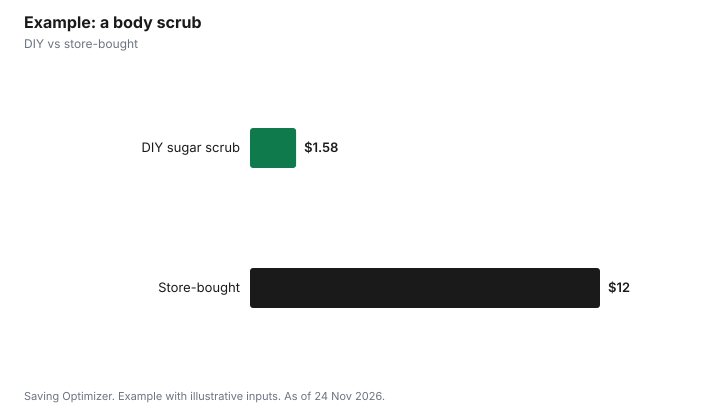

Personal Care · Canada
DIY Skincare and Beauty Recipes: What's Safe and Actually Cheaper

Some DIY skincare is safe and cheap: a sugar and oil scrub, a plain oil as a moisturizer, or an oatmeal soak. Anything with water in it can grow bacteria and mould without a preservative, so make small batches and use them fast. Skip lemon juice, baking soda and undiluted essential oils on skin, and never make your own sunscreen.
Key takeaways
- Health Canada: preservatives are essential in cosmetics because bathrooms are warm and damp (checked 24 Nov 2026).
- Safer DIY: oil-based scrubs, plain oils and fresh oatmeal soaks.
- Avoid: lemon juice, vinegar, baking soda and undiluted essential oils on skin.
- Never DIY sunscreen; in Canada it needs a DIN or NPN.
- Example: a sugar scrub for about $1.58.
Safe or skip
| Recipe | Verdict | Why |
|---|---|---|
| Sugar and oil scrub | Safe | No water, so it keeps for a few weeks |
| Plain oil as moisturizer | Safe for most | Patch test first |
| Oatmeal soak | Safe | Make fresh and use right away |
| Lemon juice toner | Skip | Acidic and can make skin sun-sensitive |
| Baking soda scrub | Skip | Too alkaline for skin |
| Homemade sunscreen | Never | Protection can't be measured at home |
Rules for DIY
- Make small batches with clean tools and containers.
- Avoid adding water, or use water-based mixes the same day.
- Patch test on your inner arm for 24 hours.
- Throw out anything that smells off, separates or changes colour.
- Keep it away from eyes.

Plan: an example
Example: 200 g of sugar from a bulk store at 29 cents per 100 g ($0.58) plus an example $1.00 of oil makes a sugar scrub for about $1.58. A store-bought scrub at an example $12 costs more, though it lasts longer and is preserved.
See a drugstore skincare routine and sunscreen DIN and NPN numbers.
Sources
- Health Canada, Cosmetic advertising, labelling and ingredients (preservative-free), checked 24 Nov 2026.
- Health Canada, Use cosmetics safely, checked 24 Nov 2026.
- Narcity, Costco vs Bulk Barn pantry prices (sugar), 23 Oct 2026, checked 24 Nov 2026.
Frequently asked questions
Is DIY skincare safe?
Simple oil-based recipes made in small batches are generally low risk. Water-based mixes spoil quickly without preservatives.
Can I use lemon juice on my face?
It's best avoided. It's acidic and can make skin more sensitive to the sun.
Can I make my own sunscreen?
No. Its protection can't be measured at home, and sunscreens in Canada need a DIN or NPN.
How long does a homemade scrub last?
An oil and sugar scrub can last a few weeks if kept dry. Throw it out if it smells or looks off.
Is DIY skincare cheaper?
Often, for simple items like scrubs. It isn't cheaper if you buy lots of special ingredients.
Researched and drafted with AI assistance and fact-checked against official Canadian sources. How we create content.
Note: Not medical advice. Patch test and see a doctor for skin problems. Education only.